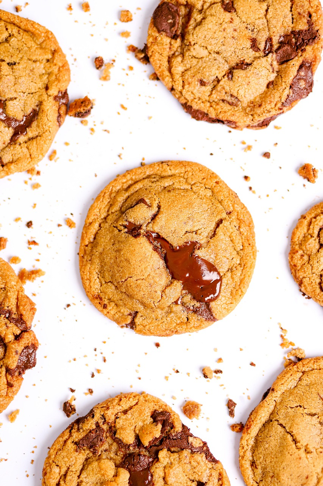

Homepage

Description
This chewy chocolate chip cookie recipe is from Tasty. It uses chocolate chunks instead of chips which makes all the difference according to the positive reviews. It takes about 15 minutes to prepare and 20 minutes to bake.
Ingredients
- 1/2 cup granulated sugar(100 g)
- 3/4 cup brown sugar(165 g), packed
- 1 teaspoon salt
- 1/2 cup unsalted butter(115 g), melted
- 1 large egg
- 1 teaspoon vanilla extract
- 1 1/4 cups all-purpose flour (155 g)
- 1/2 teaspoon baking soda
- 4 oz milk or semi-sweet chocolate chunks(110 g)
- 4 oz dark chocolate chunk(110 g), or your preference
Steps
- In a large bowl, whisk together the sugars, salt, and butter until a paste forms with no lumps.
- Whisk in the egg and vanilla, beating until light ribbons fall off the whisk and remain for a short while before falling back into the mixture.
- Sift in the flour and baking soda, then fold the mixture with a spatula (Be careful not to overmix, which would cause the gluten in the flour to toughen resulting in cakier cookies).
- Fold in the chocolate chunks, then chill the dough for at least 30 minutes. For a more intense toffee-like flavor and deeper color, chill the dough overnight. The longer the dough rests, the more complex its flavor will be.
- Preheat oven to 350°F (180°C). Line a baking sheet with parchment paper.
- Scoop the dough with an ice-cream scoop onto a parchment paper-lined baking sheet, leaving at least 4 inches (10 cm) of space between cookies and 2 inches (5 cm) of space from the edges of the pan so that the cookies can spread evenly.
- Bake for 12-15 minutes, until the edges have started to barely brown.
- Cool completely before serving.